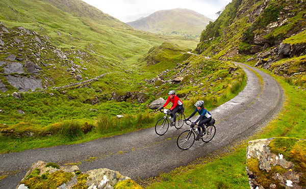

Hello and welcome to Bicycle Touring Ireland, the world’s most popular how-to bicycle touring website and information source! You’ve come to the right place if want to learn how to conduct your own guided, self-guided or self supported bicycle touring adventures. Get started right away and learn how here!
“Bicycle touring” is the act of riding a bicycle for days, weeks, months or even years on end as you travel long distances across cities, states and countries. Thousands of people of all ages, incomes and demographics are traveling by bike… and you can be one of them!
In fact, my goal here at Bicycle Touring Ireland is to not only inspire you with my own bicycle touring adventures, but to teach YOU how to travel by bike, remain comfortable while out on the road and have fun along the way! In other words, Bicycle Touring Ireland is here to give you the inspiration, confidence and resources you need, so that you too can conduct the bicycle tour of your dreams!
Ireland is one of the planet’s most sought-after bike touring destinations and a place that many people, the world over, dream of visiting, if only once in their lifetime. The steep seaside cliffs, the lush green mountains, and the safe, colorful towns attract millions of tourists from all around the world. But what is Ireland like as a bicycle touring destination? What are the roads and trails like in the country? What are the best places to cycle? What type of accommodations are available to bicycle travelers? How much does it all cost? And what are the best and worst parts about cycle touring in this famously green country?